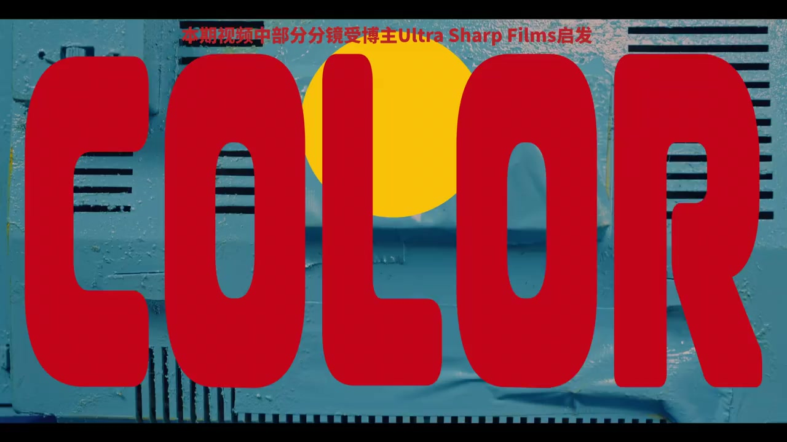
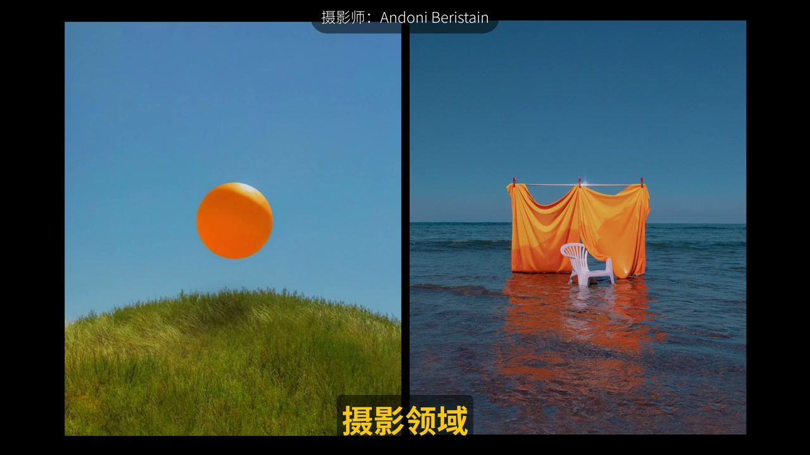
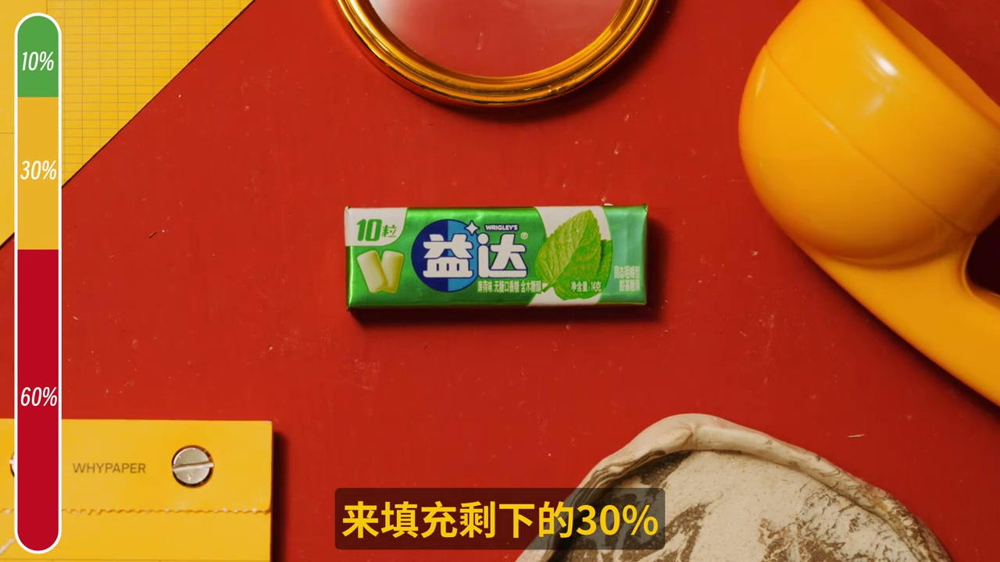

01
中文
电影里有 6比3比1 的颜色法则。
EN
Film uses the 6:3:1 color rule.
表达提示the 6:3:1 color rule（6比3比1法则）

Scene English · 摄影 · 色调法则
The Color Rule High-Level Aesthetics All Follow?
🎧 语音讲解
The 6:3:1 Rule
情境电影拍摄中有一个颜色法则6比3比1：60%颜色作主色调，30%为辅色，剩下10%作对比色突出主体。构图讲究、令人眼前一亮的画面都遵循这一法则，也大量运用在绘画、摄影、服饰、装修设计。语域：摄影教学，色彩理论。
电影里有 6比3比1 的颜色法则。
Film uses the 6:3:1 color rule.
表达提示the 6:3:1 color rule（6比3比1法则）
60% 主色，30% 辅色，10% 对比色。
60% dominant, 30% supporting, 10% contrast.
表达提示dominant / supporting（主色/辅色）
那 10% 用来突出主体。
That last 10% highlights the subject.
表达提示highlights the subject（突出主体）
主色调 → dominant color / base tone
对比色 → contrast / accent color

How to Build the 6:3:1
情境想强调一个对象：先提取它的颜色作为10%，打开色环找互补色作为背景，60%的主色就找到了；再找跟主色相近的辅色填30%。比如韦斯·安德森《布达佩斯大饭店》的粉蓝对抗、梵高《星月夜》的蓝黄对抗。语域：摄影教学，配色实操。
提取主体颜色，作为 10%。
Extract the subject's color as the 10%.
表达提示extract the color（提取颜色）
在色环上找互补色作背景。
Find its complement on the wheel for the background.
表达提示complement（互补色）
相近色填满剩下的 30%。
Similar tones fill the remaining 30%.
表达提示similar tones（相近色）
互补色 → complement / opposite color
色环 → color wheel / hue circle
Each Third's Job
情境60%的主色负责奠定画面基调跟情绪，30%的辅助色丰富层次、缓解单一色彩疲劳，最后10%的冲突色精准吸引注意、强调重点。语域：摄影教学，色彩职责。
60% 的主色定基调。
The 60% dominant sets the mood.
表达提示sets the mood（定基调）
30% 辅色丰富层次。
The 30% adds depth and richness.
表达提示adds depth（丰富层次）
10% 冲突色吸引注意。
The 10% grabs attention precisely.
表达提示grabs attention（吸引注意）
基调 → mood / the overall tone
冲突色 → clash color / the pop

Color Grading with Light
情境穿花衣服拍照时，用光来调色：光的颜色像调色盘，能和物体固有色调和统一。用光线把画面划分为60%蓝调、30%紫红调、10%黄调，就能达成同样目的。比如《双子杀手》的对比配色、《上城之战》的灯光渲染。语域：摄影教学，用光调色。
花衣服也能用光完成 6:3:1。
Light can build the 6:3:1 even for busy outfits.
表达提示busy outfits（花衣服）
光像调色盘，和物体固有色调和。
Light blends like a palette with the object's hue.
表达提示like a palette（像调色盘）
60% 蓝调，30% 紫红，10% 黄调。
60% blue, 30% magenta-red, 10% yellow.
表达提示magenta-red（紫红调）
调色盘 → palette / mixing board
调和 → blend / harmonize
说法则
说配色
说职责
说用光
「6比3比1」不是平均分配。
「互补色」作背景，从色环找。
「10%冲突色」负责抓眼球。
「花衣服」用光来调色。